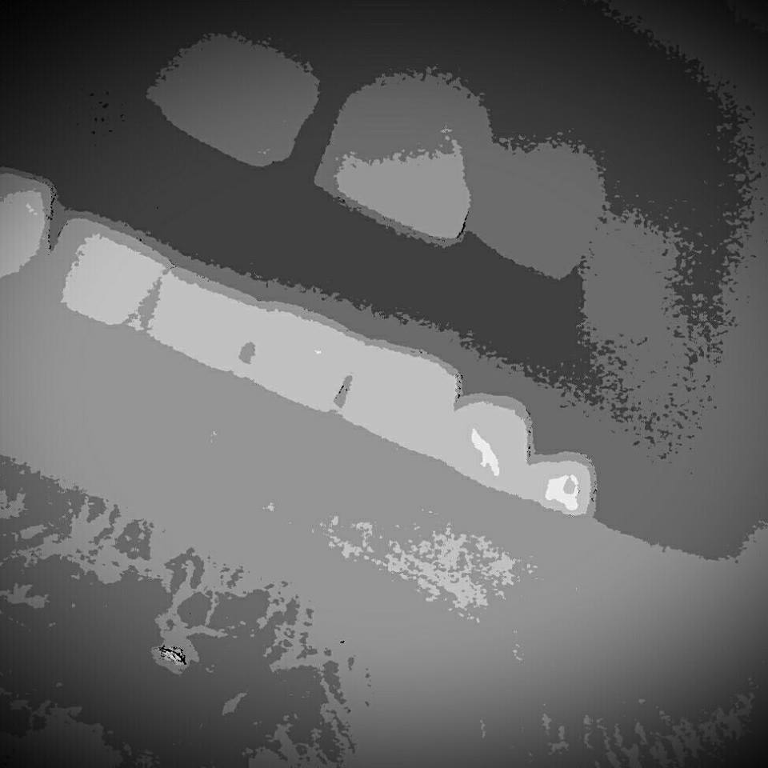

This is honestly my second First Thoughts.
A little revamp of the website. A new name and a new look. One that I have granular control over. Originally I pulled an html blog site template, open source of course, off of the interwebs. I poked around in the code a bit and managed to make it look something like a website. As long as it was viewed at 120% in only certain browsers. I managed to have a small bit of experience with setting up home pc's with Linux and could type sudo and such.
Things have changed a bit. Since I have spent a considerable amount of time working on all of these things. I will from this point forward be designing and building Help Me! Linux on my own. With my own two hands. With no templates. I spent just enough time reading and practicing web design to create this from the ground up. Shabby as it is, it is yet, one more facet I bring to the table for any interested readers. Ask any questions you may have here. I will try to respond and possibly write a blog post or tutorial for you.
I built a home server from scrap parts using Ubuntu 16.04 Server OS. I've configured it to be a file/media server. Fully automated to find, download, transcode media formats as needed, and serve up in an organized library to anywhere with internet access. Almost all with open source applications. Put together a webpage as a homepage for all my services and/or maintanences when I'm away from home. No SSH from non-local networks for security purposes. Which isn't altogether necessary but more secure nonetheless. There is a lot of opportunity in that build and it's ongoing care for tutorials and guides. To be really honest it's fantastic and even my non-techy friends appreciate how cool it is.
So as not to kill any more potential writing material before its time I will bid you farewell. Good day.